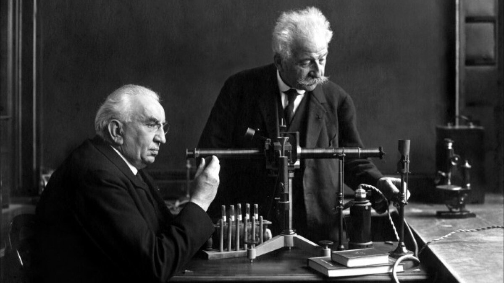
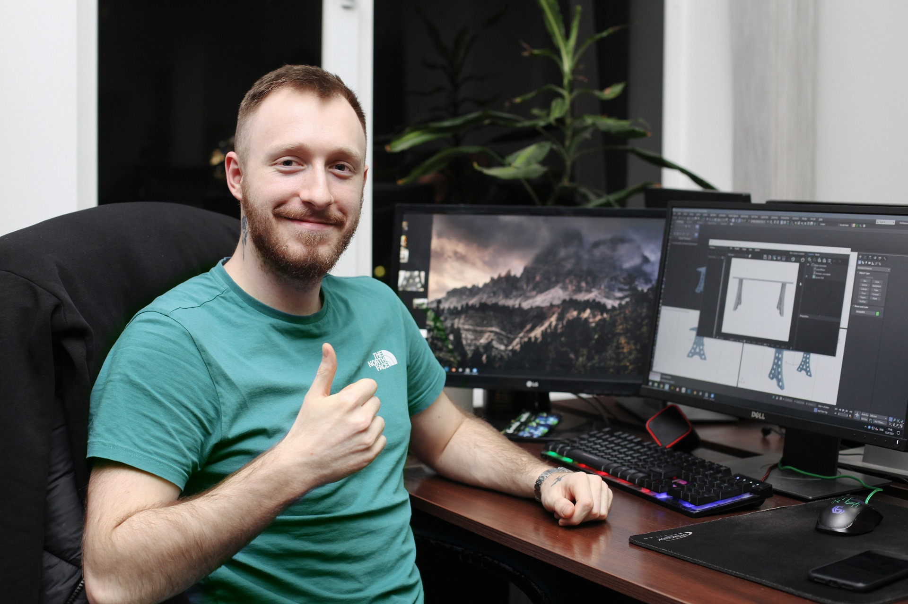
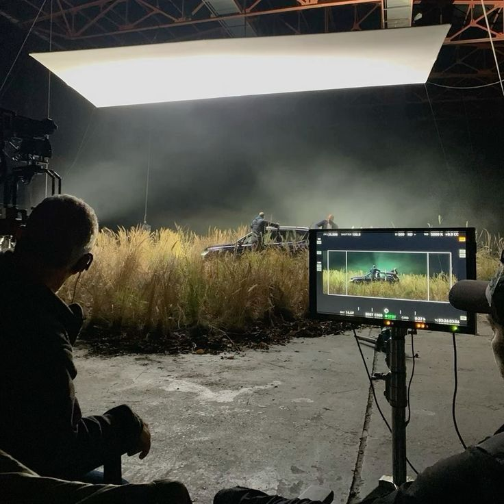

Кіноісторія
Вступ: чому кіно таке важливе
Кіно – одне з найвпливовіших мистецтв сучасності. Від коротких німілих стрічок братів Люм’єр до надсучасних блокбастерів із вражаючими спецефектами, воно завжди змінювало те, як ми сприймаємо світ. Історія кінематографа тісно переплетена з історією людства: технічний прогрес, соціальні зрушення та світоглядні перевороти відображаються в стрічках не менш яскраво, ніж у книжках чи живописі. Але, на відміну від більш традиційних видів мистецтва, кіно здатне миттєво занурити нас у різноманітні епохи й виміри. Тут важливе все: зображення, звук, гра акторів та фантазія режисерів. У цьому полягає магія “сьомого мистецтва”.
Історія кінематографа може видатися складною, адже вона охоплює понад століття експериментів, змін і видозмін формату. Проте це надзвичайно цікава мандрівка, що демонструє, як людина навчилася передавати емоції та історії через рухомі зображення. Кожен етап розвитку кіно залишив свій неповторний відбиток – від перших показів, що тривали кілька хвилин, до багатосерійних блокбастерів, які збирають мільйонні бюджети. У цій великій статті розглянемо ключові моменти становлення й розвитку кіномистецтва, його взаємодію з технологіями, політикою та масовою культурою, а також спробуємо уявити, куди воно прямуватиме далі.
1. Витоки кінематографа
Витоки кінематографа можна відстежити задовго до винайдення камери, адже людство завжди прагнуло відтворювати реальність у візуальних формах. Ще в давнину печерні малюнки, театралізовані вистави та ліхтарі-чарівники були спробами зафіксувати події й передавати емоції глядачам. Однак справжній прорив відбувся тільки в другій половині ХІХ століття, коли низка наукових винаходів створила ґрунт для появи “рухомих картинок”. Фенакістископ, зоотроп, праксиноскоп – усі ці прилади були прототипами сучасної кінокамери, що заворожували людей ілюзією руху.
Найвідоміші “офіційні” батьки кінематографа – брати Люм’єр, які 28 грудня 1895 року провели перший публічний показ короткометражних стрічок у Парижі. Сеанс тривав близько 20 хвилин і складався з декількох роликів на кшталт “Прибуття поїзда” та “Вихід робітників з фабрики”. Легенда стверджує, що деякі глядачі панічно відскакували, коли поїзд, зображений на екрані, “наближався” до них. Хоча стрічки були всього лише кількахвилинними, вони справили величезне враження та започаткували нову еру в історії людства – еру великого екрану.
2. Епоха німого кіно
Перші десятиліття ХХ століття часто називають “епохою німого кіно”. Кінематограф стрімко набирав популярність: відкривалися великі зали, продюсери інвестували все більші суми в нові стрічки, а актори ставали зірками світового масштабу. Але попри це, фільми не мали записаного звуку. Саундтрек здебільшого заміняв тапер, який грав наживо на фортепіано або іншому інструменті.
Цей період залишив нам величезну спадщину шедеврів, у яких режисери мусили виражати всю драматургію виключно візуально – через гру тіней, світла й жестів. Імена такі як Жорж Мельєс, Девід Ворк Ґріффіт, Чарлі Чаплін, Бастер Кітон стали символами німої епохи. Особливо вирізняється Чаплін зі своїм легендарним образом бродяги, який зачаровував мільйони глядачів неперевершеною пластикою та гумором без слів. Мельєс, у свою чергу, був піонером спецефектів: його “Подорож на Місяць” (1902) вкотре довела, що кіно здатне відправити нас куди завгодно – навіть у космічні дали, ще коли реальні польоти на Місяць здавалися фантастикою. Німе кіно розкрило красу чистої візуальної мови, де емоція та сюжет тримаються на міміці й пантомімі акторів, а також на винахідливості режисерів у монтажі та постановці кадру.
3. Звукове та кольорове кіно
Перехід від німого кіно до звукового став справжньою революцією. У 1927 році з’являється легендарний фільм “Співак джазу”, де вперше був використаний синхронізований звук, а вже наприкінці 1920-х більшість великих студій повністю перейшли на виробництво звукових картин. Це відкрило нові горизонти для творчості режисерів та сценаристів: у фільмах заговорили персонажі, зазвучала музика, з’явилася складніша драматургія, адже тепер сюжет доповнювався діалогами. Разом з тим чимало зірок німого кіно втратили популярність, бо мали невідповідні голоси чи не змогли адаптуватися до нових вимог.
Ще масштабнішою зміною стало впровадження кольорового кіно. Перші експерименти з кольором проводилися ще на початку ХХ століття, коли кадри розфарбовували вручну. Проте технічно досконале й масове кольорове кіно з’явилося завдяки процесам Technicolor і Eastmancolor у 1930–1950-х роках. Барви відкрили новий вимір у візуальному ряді: відтепер режисери могли не лише розповідати історію, а й збагачувати її емоційно через палітру та відтінки. “Віднесені вітром” (1939) і “Чарівник країни Оз” (1939) – класичні приклади того, як колір додав фільмам магічної атмосфери та виразності.
4. “Золотий вік” Голлівуду
Період 1930–1950-х років називають “Золотим віком” Голлівуду. Саме тоді великі студії – Metro-Goldwyn-Mayer, Paramount, Warner Bros., 20th Century Fox та RKO – встановили жорстку систему контрактів з акторами та режисерами, створюючи фабрику кіно на повну потужність. Було розроблено жанрове розмаїття: мюзикли, нуари, вестерни, мелодрами, комедії, жахи – кожен жанр мав своїх зірок і впізнаваний стиль. Кінотеатри перетворилися на розкішні палаци, куди йшли не просто дивитися фільми, а занурюватися в інший світ.
У цей час Голлівуд створив низку незабутніх зірок: від Гамфрі Богарта й Кетрін Гепберн до Кларка Ґейбла та Мерілін Монро. Із кожним роком стрічки вдосконалювалися технічно, сюжетно і візуально. Водночас існувала жорстка цензура, запроваджена так званим “Кодексом Хейса”, який диктував, що можна і що не можна показувати на екрані. Та попри ці обмеження, саме “Золотий вік” став часом, коли світ остаточно повірив у магію кіно, а глядачі з різних країн мріяли про розкішне життя голлівудських зірок.
5. Післявоєнний період і “нові хвилі”
Після Другої світової війни кінематограф у багатьох країнах стає відображенням прагнення до відбудови й нового гуманізму. В Італії виникає неореалізм (Росселліні, Де Сіка), який показував бідність і справжнє життя людей без прикрас. У Франції 1950–1960-х років формується “Нова хвиля”, де режисери Жан-Люк Годар, Франсуа Трюффо, Клод Шаброль порушували встановлені кінематографічні правила й експериментували з монтажем, звуком і стилем зйомки. Ці рухи стали прикладом творчої свободи й незалежності від студійного диктату.
В інших частинах світу також відбуваються значні зрушення. У Японії процвітає кіно Акіри Куросави, Кендзі Мідзогучі, Ясудзіро Одзу, яке поєднує глибоку філософію зі складною візуальною мовою. Радянський кінематограф розвиває власні школи режисури, хоча й під ідеологічним наглядом держави. В Індії формується Боллівуд зі своїм неповторним поєднанням співів, танців і мелодраматичних сюжетів. Усі ці явища об’єднує одне: прагнення відшукати нові форми вираження, котрі відображають сучасні реалії та культурні особливості. Саме післявоєнний період показав, що кіно може бути не лише розвагою, а й інструментом глибокого соціального і культурного переосмислення.
6. Ера блокбастерів та авторське кіно
У 1970-х кіно зазнає ще одного переформатування. З одного боку, вибухає популярність блокбастерів: “Щелепи” (1975) Стівена Спілберга, “Зоряні війни” (1977) Джорджа Лукаса чи “Іншопланетянин” (1982) були справжніми атракціонами, де вражали масштаб, спецефекти та пригодницька атмосфера. Такі фільми навчились збирати нечувані касові збори по всьому світу і фактично визначили глобальний тренд: робити ставку на видовищність.
З іншого боку, у різних країнах розвивається авторське кіно – від нових американських режисерів Мартіна Скорсезе, Френсіса Форда Копполи й Вуді Аллена до європейців Вернера Герцога, Інгмара Бергмана, Федеріко Фелліні та ін. Такі картини були сконцентровані на внутрішньому світі героїв, психологізмі, соціальній гостроті. Вони переосмислювали жанрові канони, порушували табу й часто ставали культовими серед поціновувачів “інтелектуального кіно”. Саме цей період продемонстрував, як масштабна індустрія може співіснувати з глибинними авторськими проєктами, задовольняючи і масову аудиторію, і вибагливих критиків.
7. Революція спецефектів і CGI
Із розвитком комп’ютерних технологій у 1980–1990-х роках світ кінематографу перевернувся знову. Піонерами стали “Термінатор 2: Судний день” (1991) і “Парк Юрського періоду” (1993), де були показані небачені доти візуальні ефекти. Комп’ютерна графіка дозволила відмовитися від дорогих та складних макетів або механічних ляльок та “пожвавлювати” динозаврів, космічні кораблі та фантастичних істот майже без меж. Режисери почали набагато сміливіше мріяти, розширюючи жанрове різноманіття – від наукової фантастики до фентезі.
CGI (Computer-Generated Imagery) швидко став стандартом для більшості великобюджетних картин, що дозволило знімати сцени з вибухами, катастрофами, постапокаліптичними світами на рівні, недоступному раніше. Фільми як “Матриця” (1999) чи “Володар перснів” (2001–2003) закріпили успіх комп’ютерної графіки, довівши, що тепер можна створити будь-який світ, будь-який візуальний ефект, якщо вистачить фантазії та коштів. Звісно, паралельно виникла дискусія про можливу втрату “живої” атмосфери кіно і про те, що спецефекти нерідко можуть підміняти зміст. Але очевидно, що технологічний стрибок спростив більшість виробничих процесів та дав митцям нові інструменти для самовираження.
8. Сучасний кінематограф і стримінгові платформи
Із початку XXI століття ми спостерігаємо новий рівень глобалізації кіно. Великі голлівудські студії зосереджені на марвелівських кіновсесвітах, ремейках, перезапусках та сиквелах, які гарантовано приносять комерційний успіх. Водночас незалежні кінокомпанії й майданчики фестивалів на кшталт Канн чи Венеції дають можливість заявити про себе молодим режисерам, які пропонують світу свіжі й нерідко сміливі теми. Та справжній каталізатор змін – це стримінгові сервіси: Netflix, Amazon Prime, Disney+, HBO Max та інші.
Стримінгові платформи запустили процес перегляду фільмів і серіалів “на вимогу”, де немає прив’язки до кінотеатрів чи телеефірів. Це розширило аудиторію і дозволило безлічі проєктів відбутися без складних погоджень з дистриб’юторами. Фактично кожен, у кого є доступ до Інтернету, отримав змогу переглядати світові прем’єри вдома в будь-який зручний час. Водночас для кінематографу це став виклик, оскільки глядацькі звички почали змінюватися. Багато людей менше відвідують кінотеатри, чекаючи на релізи онлайн. Це впливає на фінансову модель індустрії: студії частіше ризикують, створюючи авторські чи нішеві фільми, тоді як стримінги інвестують шалені бюджети в серіали й повнометражні стрічки, повністю оминаючи кінозали.
9. Майбутнє кіно та тенденції розвитку
Взаємодія з новими технологіями триває: з’являються формати віртуальної реальності (VR), розширеної реальності (AR), інтерактивні фільми, де глядач може впливати на сюжет (наприклад, “Bandersnatch” від Netflix). Також активно використовуються технології штучного інтелекту, що дозволяють відтворювати обличчя акторів у будь-якому віці або навіть “оживляти” вже померлих зірок. Крім того, поширюються менш дорогі, але високоякісні засоби зйомок, і тепер навіть мобільний телефон може стати інструментом для створення повноцінного фільму.
У майбутньому ми, ймовірно, побачимо ще сильніше злиття кіно з іграми, інтерактивними 3D-просторами і соціальними мережами. Великі студії все одно продовжать робити ставку на масштабні блокбастери, здатні окупити себе за рахунок міжнародного прокату та мерчу. Але паралельно розвиватимуться інші напрями – фестивальні стрічки, документальні фільми, авторські експерименти тощо. Можливо, кінозали теж трансформуються, пропонуючи глядачам цілком нові формати занурення, як-от 4D з додатковими сенсорними ефектами.
Висновок
Історія кінематографа – це історія людської допитливості й пристрасті до розповіді. За трохи більше ніж століття ми пройшли шлях від кількахвилинних німих роликів до інтерактивних всесвітів із надсучасними спецефектами. Кожен поворот у цій історії відображав потреби часу: соціальні, технологічні та естетичні запити суспільства. Сьогодні кіно стає ще доступнішим завдяки стримінговим сервісам і цифровим платформам, а отже, можливостей для експериментів та творчої свободи лише більшає. Попри всі виклики та поляризацію жанрів, любов до великого екрану не зникає, адже людство завжди шукатиме нові способи розповідати історії та ділитися емоціями.